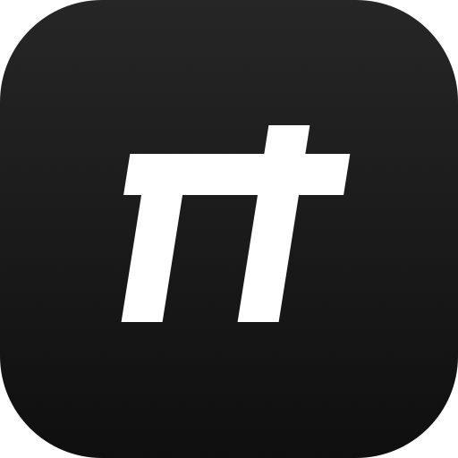
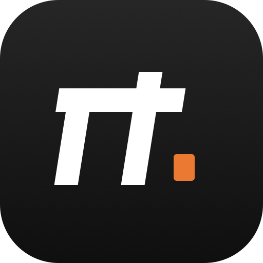
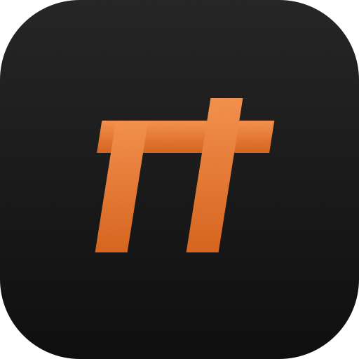
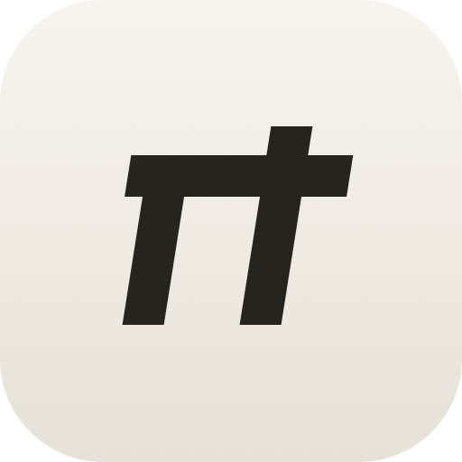

PiCode App Icon Proposals
R20 · 四案 · 同一 π 字形骨架（几何斜体、右腿出头读 π）· ZCode 校准参照 = 黑 squircle + 白粗斜体 Z（族形，未嵌入其资产——红线）

V1 · π on black
128
64
48
32
16

V2 · π + 终端光标推荐
家族形 + 一点品牌橙（终端光标块）——「agent 在工作」的暗示；小尺寸下橙色点也是与 ZCode 的区分记号。

V3 · 橙 π
128
64
48
32
16

V4 · 暖纸墨 π
128
64
48
32
16
定稿后交付物（R20 票）：SVG master 归档 + 生成 icns/png 全尺寸 + 接入打包链（@electron/packager 的 icon 选项、dev 窗口 Dock 图标）。
红线注：ZCode 图标仅作形制校准参照（已只读查看后弃用），其资产不入库；π 字形为自绘几何路径，无字体依赖。
背景：PiCode 现状 = 全仓无任何自定义图标（打包走 Electron 默认）——本批立 R20 修复。